Sinh viên: Triệu Văn Duy — Mã SV: 25020090
Điều hướng đến thư mục Documents trên máy tính. Tạo một thư mục mới và đặt tên có tính định danh cao: ThucHanh_TrieuVanDuy_25020090.
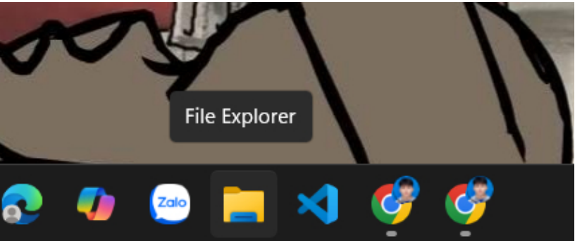
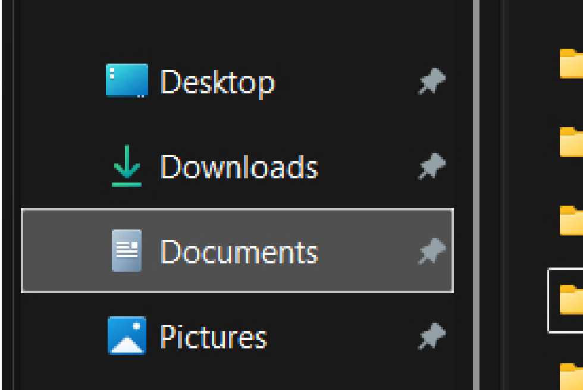
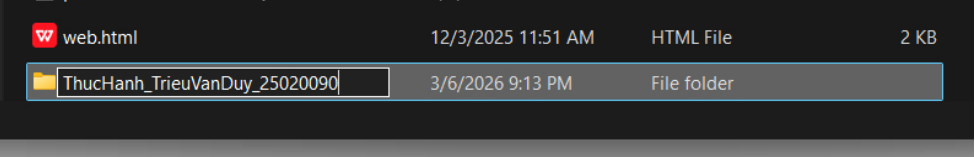
Bên trong thư mục gốc vừa tạo, tiến hành tạo một tệp văn bản mới (Text Document) với tên ban đầu là GhiChu.txt.
Sử dụng tính năng Rename để đổi tên tệp này thành GhiChuQuanTrong.txt nhằm mô tả đúng tính chất của tệp.
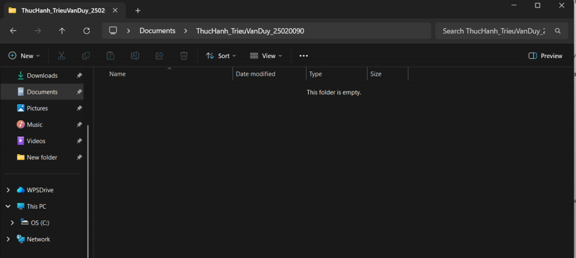
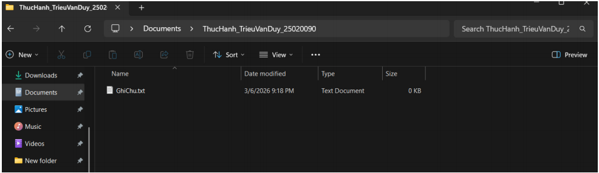
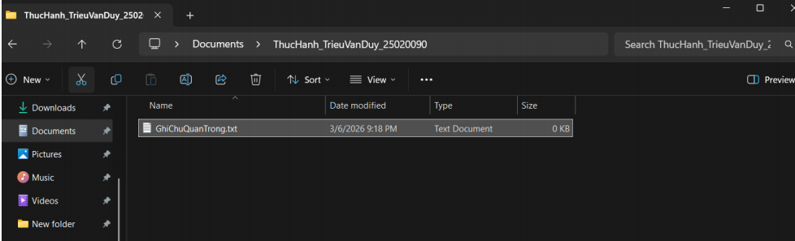
Tạo thêm một thư mục con với tên TaiLieu nằm bên trong thư mục ThucHanh_TrieuVanDuy_25020090 để rèn luyện kỹ năng phân cấp dữ liệu.
Thực hiện thao tác di chuyển tệp GhiChuQuanTrong.txt từ thư mục gốc vào trong thư mục con TaiLieu.
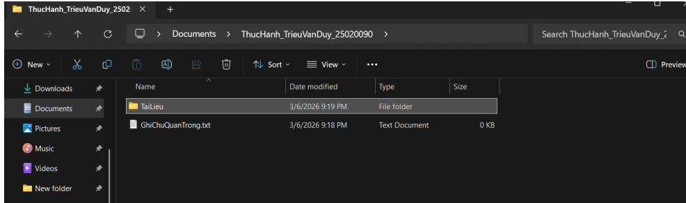
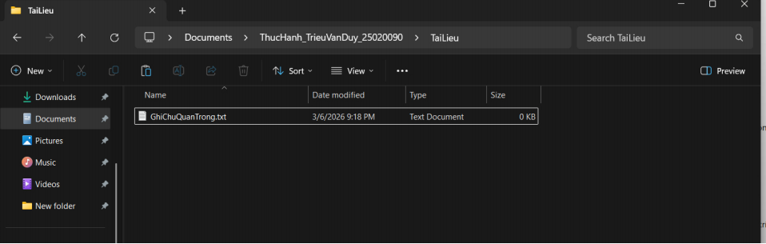
Khởi tạo một tệp văn bản khác có tên DiChuyen.txt.
Để giải phóng dung lượng triệt để, tiến hành xóa vĩnh viễn tệp DiChuyen.txt (sử dụng tổ hợp phím Shift+Delete hoặc xóa vĩnh viễn từ menu), hệ thống đã hiển thị hộp thoại xác nhận "Are you sure you want to permanently delete this file?" và thao tác đã được hoàn tất.
<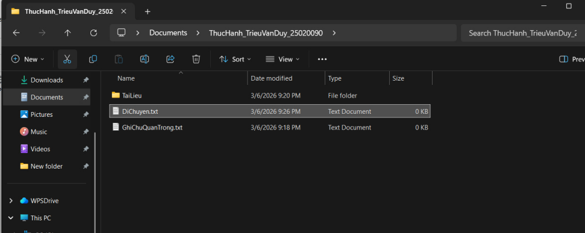
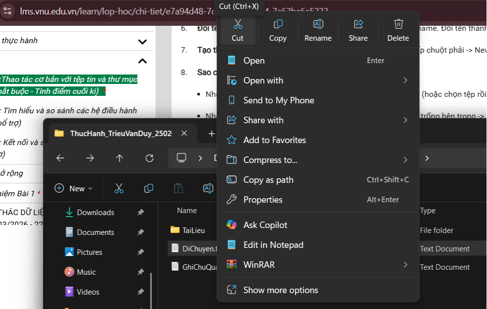
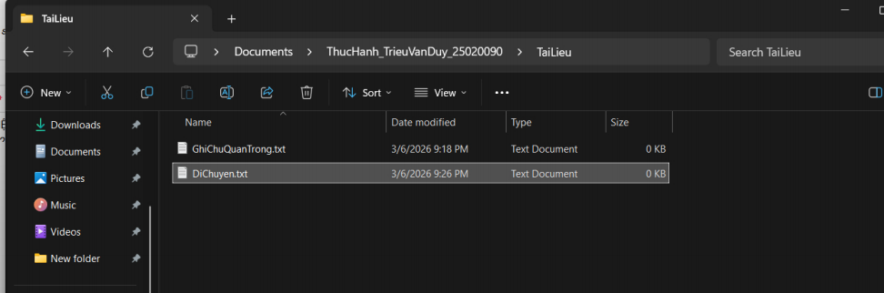
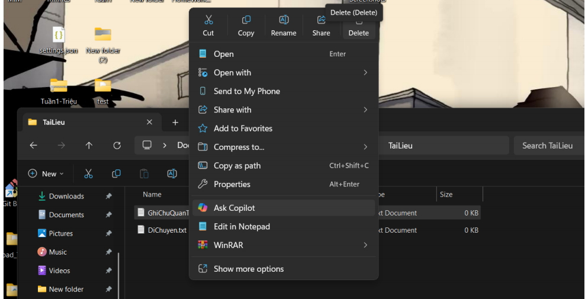
Thực hiện lệnh xóa thông thường (Delete) đối với tệp GhiChuQuanTrong.txt, tệp này sau đó được chuyển vào Recycle Bin.
Mở Recycle Bin, xác định đúng tệp đã xóa. Nhấp chuột phải vào tệp và chọn lệnh Restore để khôi phục dữ liệu.
Tệp GhiChuQuanTrong.txt đã được khôi phục thành công và quay trở lại đúng vị trí ban đầu trong thư mục TaiLieu.
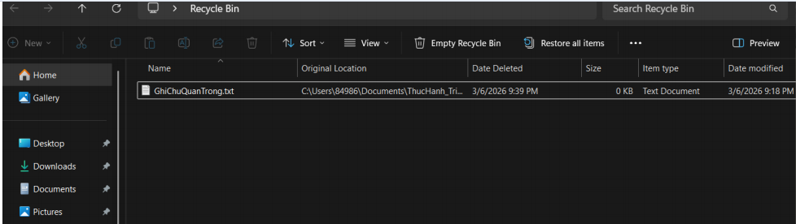
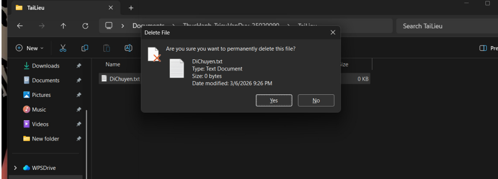
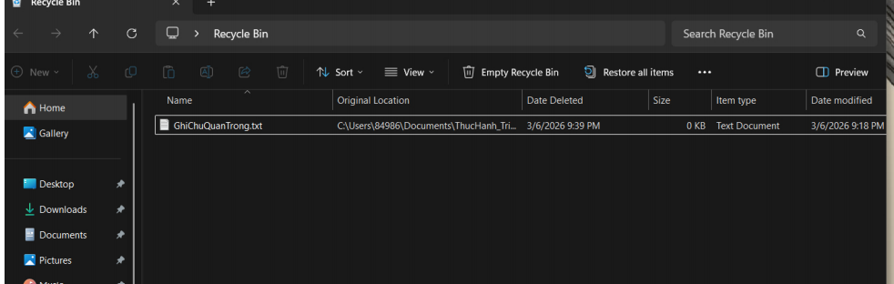
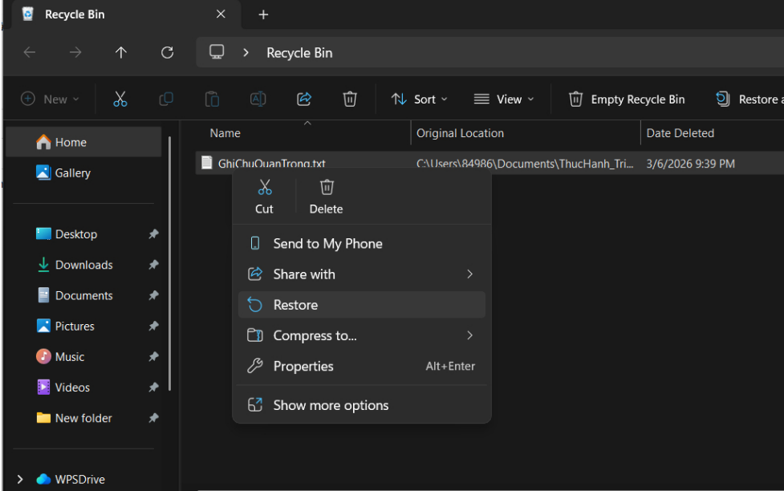
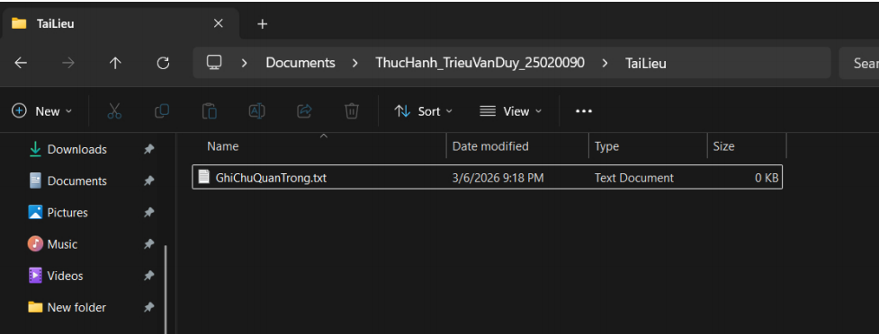